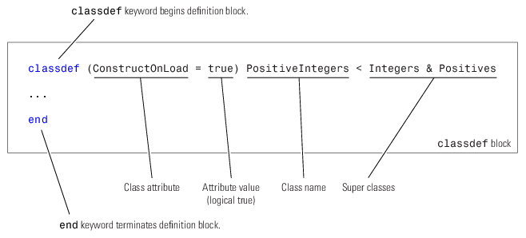

User-Defined Classes
What Is a Class Definition
A MATLAB® class definition is a template whose purpose is to provide a description of all the elements that are common to all instances of the class. Class members are the properties, methods, and events that define the class.
Define MATLAB classes in code blocks, with subblocks delineating the definitions of various class members. For syntax information on these blocks, see Components of a Class.
Attributes for Class Members
Attributes modify the behavior of classes and the members defined in the class-definition block. For example, you can specify that methods are static or that properties are private. The following sections describe these attributes:
Class definitions can provide information, such as inheritance relationships or the names of class members without actually constructing the class. See Class Metadata.
See Specifying Attributes for more on attribute syntax.
Kinds of Classes
There are two kinds of MATLAB classes—handle classes and value classes.
Value classes represent independent values. Value objects contain the object data and do not share this data with copies of the object. MATLAB numeric types are value classes. Values objects passed to and modified by functions must return a modified object to the caller.
Handle classes create objects that reference the object data. Copies of the instance variable refer to the same object. Handle objects passed to and modified by functions affect the object in the caller’s workspace without returning the object.
For more information, see Comparison of Handle and Value Classes.
Constructing Objects
For information on class constructors, see Class Constructor Methods.
For information on creating arrays of objects, see Create and Initialize Object Arrays.
Class Hierarchies
For more information on how to define class hierarchies, see Hierarchies of Classes — Concepts.
classdef Syntax
Class definitions are blocks of code that are delineated by the classdef keyword at the beginning and the end keyword at the end. Files can contain only one class definition.
The following diagram shows the syntax of a classdef block. Only comments and blank lines can precede the classdef keyword.

Class Code
Here is a simple class definition with one property and a constructor method that sets the value of the property when there is an input argument supplied.
classdef MyClass properties Prop end methods function obj = MyClass(val) if nargin > 0 obj.Prop = val; end end end end
To create an object of MyClass, save the class definition in a .m file having the same name as the class and call the constructor with any necessary arguments:
d = datestr(now); o = MyClass(d);
Use dot notation to access the property value:
o.Prop
ans = 10-Nov-2005 10:38:14
The constructor should support a no argument syntax so MATLAB can create default objects. For more information, see No Input Argument Constructor Requirement.
For more information on the components of a class definition, see Components of a Class.